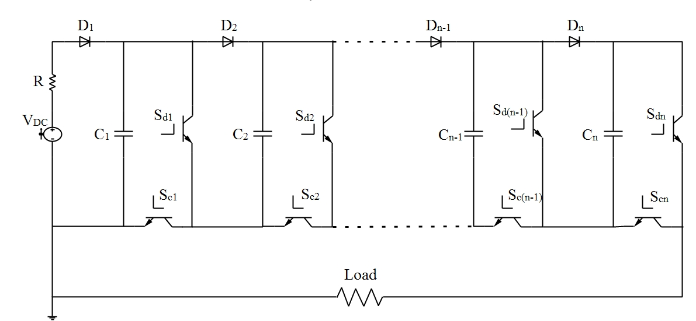
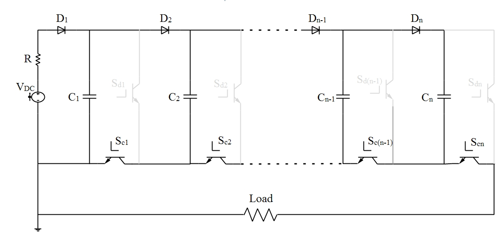
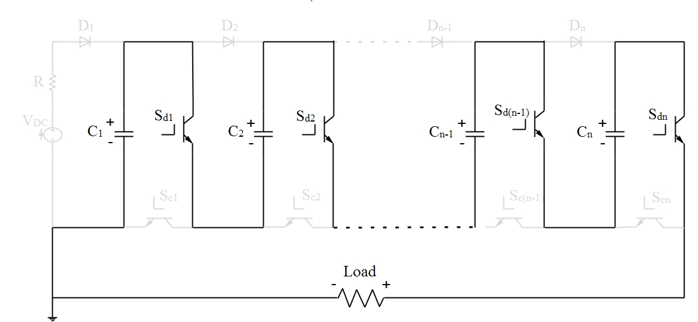

高壓固態半導體脈衝電路設計用於電漿生成
All-Solid-State Electronic Based Repetitive High Voltage Pulse MARX Generator circuit Design for Plasma Generation
背景
常溫大氣電漿系統目前在生物醫學上有著廣泛的研究發展，例如有: 癌症細胞消滅、蛋白質沉積、牙齒美白、殺菌等。 目前多項研究證實，使用脈衝波型輸出產生的電漿在放電效率與功率轉換效能皆高於以往使用弦波電壓源波型。更重要的一點，利用脈衝波型的低佔空比特性，使電漿源具有較多的冷卻時間，整體溫度比起持續輸出的弦波波型更接近室溫，此現象將使脈衝電漿更有利於生物醫學相關的研究。故具有輸出穩定高頻高壓能力的脈衝產生電路備受重視。 馬克思脈衝產生器(MARX generator)為一典型高壓脈衝產生電路，主要的核心觀念為應用電容充放電進行倍壓以獲得高壓脈衝波型。早期因為使用的傳統開關火花間隙開關(spark gap)具有開關速度慢、壽命較短、能量損耗大的缺陷，所以電路使用上受到侷限。 近年來，隨著半導體科技快速發展，具有較快開關速度的開關元件(金屬氧化物半導體場效電晶體Metal-Oxide-Semiconductor Field-Effect Transistor, MOSFET及絕緣柵雙極電晶體Insulated Gate Bipolar Transistor, IGBT)逐漸走向功率化，其耐高壓與高電流的能力逐漸提升，其開關轉換的能量損失亦遠小於傳統開關，將這些半導體元件應用在此高壓脈衝產生電路上，逐漸改善低工作頻率與低能量轉化效率的缺陷，另外電路具有極高的脈衝參數(電壓、佔空比、頻率)操作彈性，所以在產生電漿方面得應用逐漸受到倚重。 馬克思脈衝產生器(MARX generator)具有極高的脈衝操作彈性，所以對於輸出的脈衝參數所能產生的電漿強度與效能亦為重要的研究主題。
目的
本研究目的為以全固態半導體元件為基礎，建立一套能穩定輸出高頻高壓的脈衝電路，用以產生電漿，並且透過量化所產生的電漿能量，進一步探討不同輸出脈衝參數(電壓、佔空比、頻率等…)所產生的電漿強度與輸出效能得變化，從而得到較低的電漿溫度與較少省電的脈衝參數。
方法
固態半導體為基礎的馬克思脈衝產生器，其主要的核心運作原理為，以較低壓的直流電源並聯同步對多個電容充電，再透過開關控制將電容瞬間串聯放電至負載，以達到電容倍壓的結果。圖一為全固態半導體為基礎的馬克思脈衝產生器電路圖:

Fig.1:全固態半導體馬克思產生器電路圖
Vdc為直流電源、Dn為整流二極體、Cn為儲能電容、Sdn與Scn分別為放電開關與充電開關。 圖二為並聯充電模式圖:

Fig.2:並聯充電模式
圖三為串聯放電模式圖:

Fig.3:串聯放電模式
透過適當的開關控制，即可輸出瞬間高壓的脈衝訊號。
參考文獻